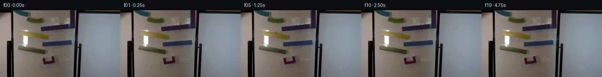

![首帧]()

Round 00
2026-11-05T10:57:50.027911+00:00像素候选变化代码 +254/−0inspection 更新
pixels 09a93ff51b454594 · code a6a419621df494c0
查看本轮 generate.py 真实 diff
--- previous/generate.py +++ current/generate.py @@ -0,0 +1,254 @@ +"""Local pixel-only marble animation, with an explicit projected-gravity trajectory.""" +from pathlib import Path +import json +import math +import numpy as np +from PIL import Image, ImageDraw, ImageFilter +from artifact_io import save + +ROOT = Path(__file__).resolve().parent +W, H = 256, 144 +RADIUS = 2.2 +G = 1100.0 +DT = 1.0 / 2400.0 +START_X = 130.1857 +START_Y = 28.0258 + +# Surface coordinates, in the fixed photograph's pixel coordinate system. +# The first edge passes one radius below the measured original marble center. +PURPLE_M = -0.100 +PURPLE_B = START_Y + RADIUS * math.sqrt(1 + PURPLE_M**2) - PURPLE_M * START_X +RAMPS = [ + dict(name='purple', lo=87.0, hi=149.0, m=PURPLE_M, b=PURPLE_B, direction=-1), + dict(name='yellow', lo=42.0, hi=100.0, m=9.5 / 58.0, b=44.5 - 42.0 * 9.5 / 58.0, direction=1), + dict(name='blue', lo=90.0, hi=152.0, m=-4.5 / 62.0, b=69.0 + 90.0 * 4.5 / 62.0, direction=-1), + dict(name='green', lo=39.0, hi=96.0, m=9.0 / 57.0, b=76.5 - 39.0 * 9.0 / 57.0, direction=1), + dict(name='catcher', lo=98.8, hi=110.0, m=-2.4 / 13.2, b=110.2 + 97.5 * 2.4 / 13.2, direction=-1), +] + + +def center_height(surface, x): + return surface['m'] * x + surface['b'] - RADIUS * math.sqrt(1 + surface['m']**2) + + +def make_trajectory(): + """Fixed-time integration with rolling contact, flight, and dissipative impact.""" + x, y = START_X, START_Y + vx = vy = 0.0 + surface_id = 0 + mode = 'contact' + bounced = False + states = [] + events = [] + for step in range(int(5.1 / DT) + 1): + t = step * DT + states.append((t, x, y, vx, vy, surface_id, mode)) + if mode == 'rest': + continue + if mode == 'contact': + s = RAMPS[surface_id] + # A rolling solid sphere has a 5/7 projected-gravity factor. + ax = (5.0 / 7.0) * G * s['m'] / (1 + s['m']**2) + ax -= 0.12 * vx + vx += ax * DT + x += vx * DT + y = center_height(s, x) + vy = s['m'] * vx + if surface_id == 4 and x <= s['lo']: + x = s['lo'] + y = center_height(s, x) + vx = vy = 0.0 + mode = 'rest' + events.append(dict(time=t, event='settled in catcher', x=x, y=y)) + elif (s['direction'] < 0 and x < s['lo']) or (s['direction'] > 0 and x > s['hi']): + mode = 'flight' + surface_id += 1 + events.append(dict(time=t, event='leave ' + s['name'], x=x, y=y)) + elif mode == 'flight': + vy += G * DT + x += vx * DT + y += vy * DT + s = RAMPS[surface_id] + if s['lo'] - 0.3 <= x <= s['hi'] + 0.3 and y >= center_height(s, x) and vy - s['m'] * vx > 0: + y = center_height(s, x) + events.append(dict(time=t, event='impact ' + s['name'], x=x, y=y)) + tangent = (vx + s['m'] * vy) / (1 + s['m']**2) + if surface_id == 4 and not bounced: + # One small bounce inside the cup, normal restitution 0.13. + normal_speed = vy - s['m'] * vx + vx = 0.10 * tangent + 0.13 * normal_speed * s['m'] / (1 + s['m']**2) + vy = s['m'] * 0.10 * tangent - 0.13 * normal_speed / (1 + s['m']**2) + bounced = True + else: + # The lip/face impact loses most of the incoming tangential speed. + vx = 0.12 * tangent + vy = s['m'] * vx + mode = 'contact' + if surface_id == 4 and x > s['hi']: … diff truncated; 167 more lines …